Data visualisation
Alistair Bailey
Learning Objectives
In this lesson the learner will:
- Use geometrical objects and aesthetic mappings to produce time series plots, boxplots and bar charts.
- Use facets to create subplots of data.
- Use factors and statistical mappings to transform plots.
- Make positional and coordinate adjustments to transform plots.
- Use themes to customize plots
Motivation
We’ve transformed the surveys data ready for plotting, but what do we want to plot?
We want to plot the number of captures as a function of quarter in which they took place, whilst comparing both kangaroo rats and granivores, as well as comparing kangaroo rat exclosure with plots containing kangaroo rats and granivores.
Such a plot should inform us about the effect of kangaroo rat exclosure on the granivore population. All the work we did to transform the data should make this straight forward as we have a tidy data set i.e. each observation forms a row and each variable forms a column. We have four variables: rodent_type, quarter, plot_type and captures.
Here’s the figure from the paper again for reference:

Figure 1 from Heske et. al., 1994
Reproducing the time series
Let’s remind ourselves of the basic form for creating plots with the ggplot2 package:
ggplot(data = <DATA>) +
<GEOM_FUNCTION(mapping = aes(<MAPPINGS>))>In this form we provide a data frame as an argument to the ggplot function and then aesthetics (the variables we wish to plot) are mapped to a geometric object such as a line. If we were to plot several geoms() on the same plot, we’d need to map the aesthetics to each geom(), so often it’s more convenient to provide the aesthetics argument to ggplot() instead, and it will be mapped to all geoms we add to the plot. Only do this if this is what you want.
In our first attempt at plotting the data, our data is by_quarter and we’ll map three aesthetics x = quarter,y = captures,colour = plot_type to two geoms geom_line and geom_point.
ggplot(data = by_quarter,
mapping = aes(x = quarter,y = captures,colour = plot_type)) +
geom_line() +
geom_point()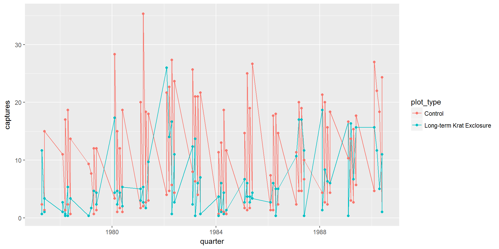
This isn’t much use as we can’t tell the difference between the kangaroo rats and granivores. We need to use our fourth variable rodent_type to create two plots, one for the granivores and the other for the kangaroo rats.
Facets
Creating sub-plots based on the rodent_type variable uses facets. If we are faceting plots by a single variable we use facet_wrap(). The first argument is ~ followed by the variable name, here rodent_type. This argument is called a formula. There are many additional arguments that can be provided, see ?facet_wrap.
Using facet_wrap(~ rodent_type) gives us this plot:
ggplot(data = by_quarter,
mapping = aes(x=quarter,y=captures,colour=plot_type)) +
geom_line() +
geom_point() +
facet_wrap(~ rodent_type)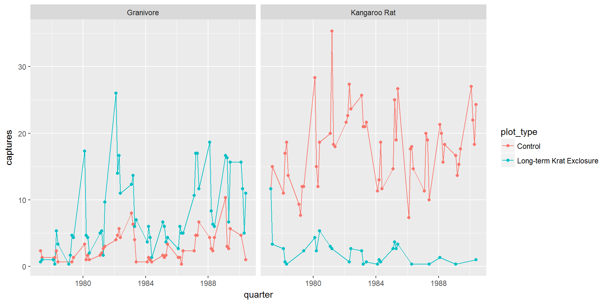
So this is starting to look more like the published figure, and now we can confirm that the granivore populations do increase when the kangaroo rats are excluded.
However we can improve things, and we’ll come back making the figure more polished at the end of this lesson.
If we wanted to plot the combination of two variables we’d use facet_grid() in which the formula becomes first_variable ~ second_variable.
Challenge
Try plotting
by_quarterusingfacet_grid()with the variablesplot_typeandrodent_typeas arguments as described above for plotting the combination of two variablesWe don’t need to map the colour aesthetic. The plot should look like the one below:
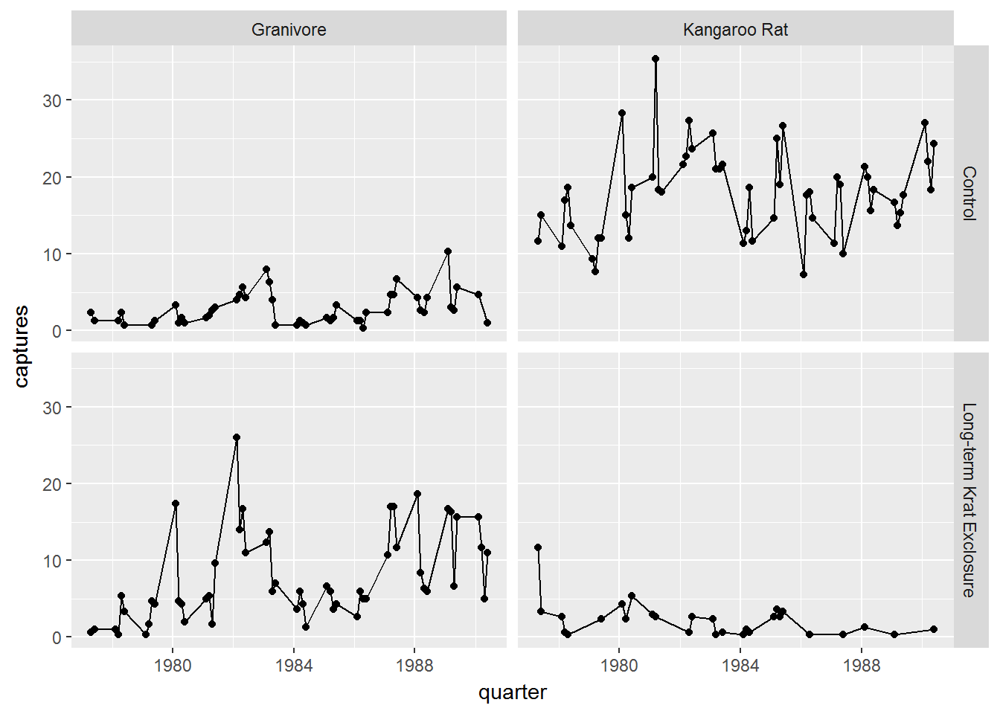
Other plot types
There are many other types of plot we may wish to create when exploring data. The previous plot showed us changes with time, but we might want to look at averages and spread or other statistical summaries of the data.
Boxplots
Box-plots are a standard way to plot the distribution of a data set. Plotting the data this way means that we drop the dynamic information, the time dimension, but gain a compact summarised view of the variability of the number of captures.
In the following code we use the boxplot() geom, and this time swap the mapping such that colour maps to the rodent type, and plots are faceted according to the plot type.
ggplot(data= by_quarter,
mapping = aes(x = rodent_type, y = captures,
colour = rodent_type)) +
geom_boxplot() +
facet_wrap(~ plot_type)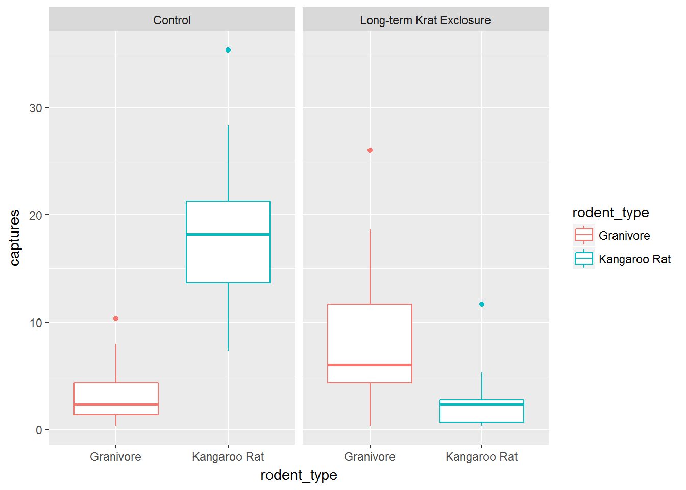
Position adjustments
Another common adjustment we might make to our plots is to adjust the position of the data.
Recall the mpg data set for cars and our plot showing the fuel efficiency versus the size of the engine. Many of the points are actually over plotted such that we can’t see them.
By adding a bit of random noise to the position each data point, called jitter we can spread the points out and see them more clearly. This is seen in the second plot below, where the postion = "jitter" argument has been provided to the geom_point() function.
It’s a little counter intuitive to add noise to a plot, but when we’re trying to explore data for patterns it can be very useful.
# Without jitter
ggplot(data = mpg) +
geom_point(mapping = aes(x = displ, y = hwy, colour = class))
# With jitter
ggplot(data = mpg) +
geom_point(mapping = aes(x = displ, y = hwy, colour = class),
position = "jitter")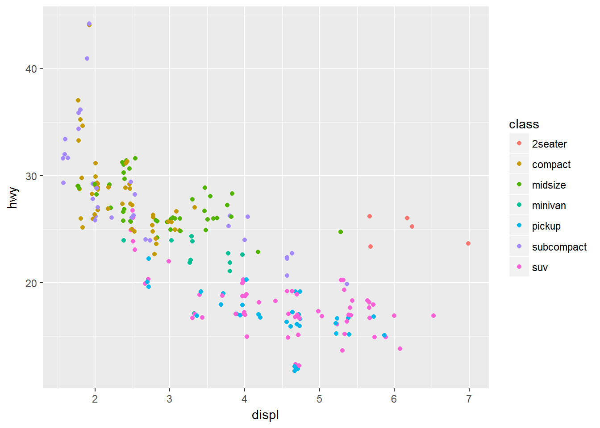
Let’s add points to our box-plot and for the challenge try comparing the plot to one where the points are jittered.
# Boxplot without jitter
ggplot(data= by_quarter,
mapping = aes(x = rodent_type, y = captures,
colour = rodent_type)) +
geom_boxplot() +
geom_point() +
facet_wrap(~ plot_type)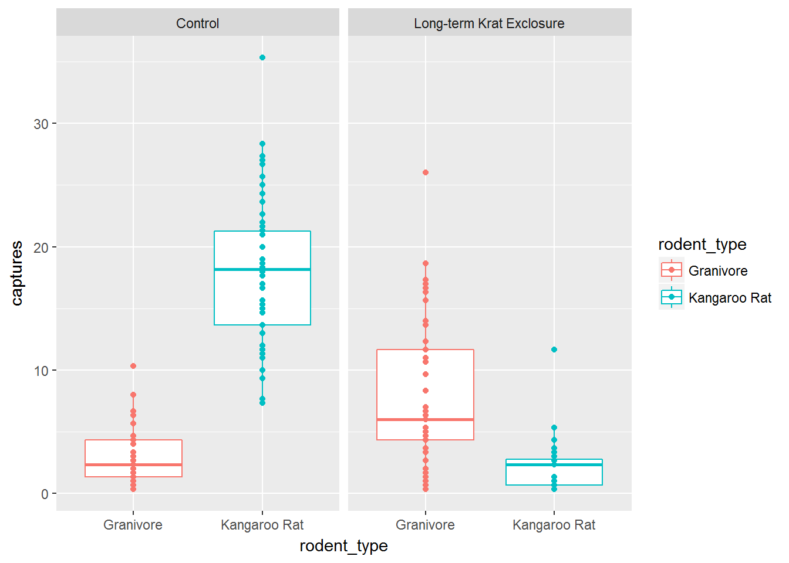
Challenge
Plot the previous boxplot with jittered points
The plot should look like the one below.
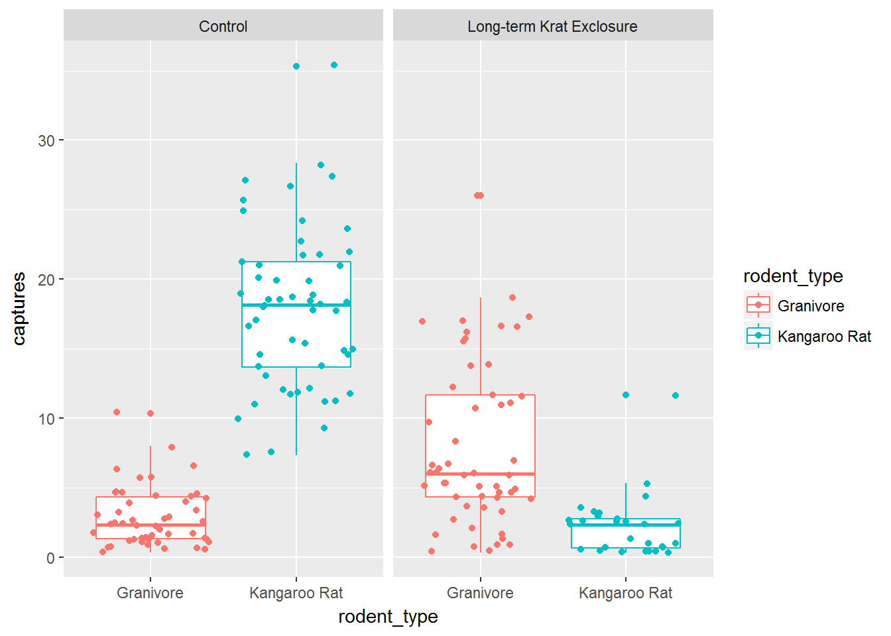
Statistical transformations
Next we’ll plot bar charts.
These simple plots actually reveal subtleties in plots. In the following code we take the by_month_genus subset and create a bar chart of genus, filling the bars with colour according to rodent_type.
# Create a bar plot of genus from by_month_genus
ggplot(by_month_genus) +
geom_bar(mapping = aes(x = genus, fill=rodent_type)) +
facet_grid(~ plot_type)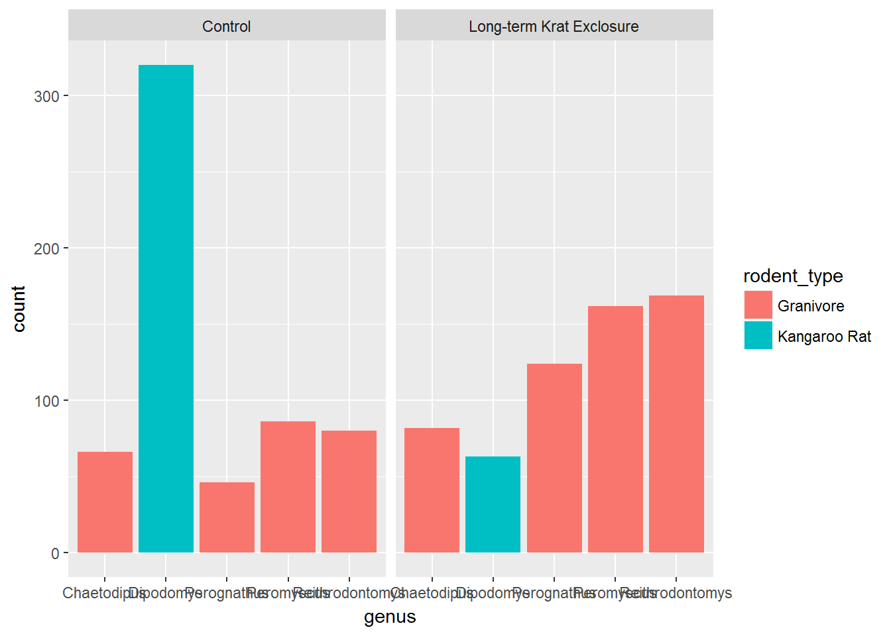
We see that the code has automatically created a count variable on the y-axis for each genus plotted as a bar on the x-axis. (We’ll come back to the issue of illegible labels shortly.)
This is because the geom_bar() algorithm automatically performs a statistical transformation of the mapped variable. That is to say it performs a count and bins the data according to the genus. This means we have a chart where the bar height corresponds to the number of rows for each genus.
But this isn’t a count of the captures, it’s how many rows each genus appears in of by_month_genus. Remember how we summarised this data to calculate captures per month.
Often when people talk about bar charts they are referring to when the height of the bar is a variable present in the data, here that would be the captures column. In this kind of situation we need to map the y-axis too, and change the default geom_bar() statistical transformation to stat = "identity" so that it takes the values provided in the captures column to determine the height of the bar.
To reiterate: if you are trying to create a bar chart using x and y variables contained in your data set, you need to set geom_bar(stat = "identity").
# Create a bar plot of genus from by_month_genus using y = captures and
# stat = "identity"
ggplot(by_month_genus) +
geom_bar(mapping = aes(x = genus, y = captures,
fill=rodent_type), stat = "identity") +
facet_grid(~ plot_type)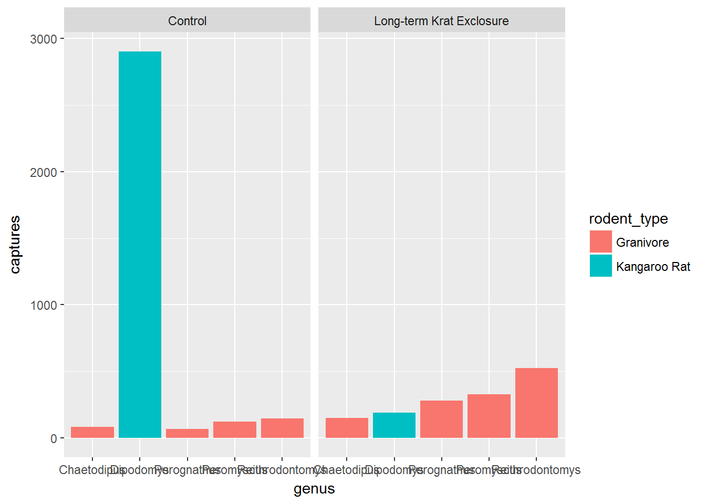
Challenge
Let’s compare the plot we just made with
by_month_genusto one usingsurveys_subsetUse the code from the plot where we didn’t use the
capturescolumn and use the default statistical transformation.As
surveys_subsethas one row for every capture, counting the rows should produce the same plot as when we used the calculatedcapturescolumn inby_month_genus.
To learn more about the 20 statistical transformations built into ggplot2 have a look at the ggplot2 cheatsheet.
Challenge
For the next part we need to calculaute the mean monthly captures.
Recall how to do grouped summaries and create an object
by_month_meanusingby_month_genus, grouping bygenus,plot_type,rodent_typeand then summarisingmean_captures = mean(captures).
Using our new summary data frame by_month_mean we’ll look at using positions with bar charts.
The next few graphs illustrate a stacked bar chart situation. Here we plot the mean monthly number of captures at each plot type, colouring by genus.
In the first plot the bars are stacked such that we can see the relative mean monthly captures per genus, but not what the actual mean was for each genus.
To get round this problem we can alter the default position setting to identity. However, this means that filled bars would overlap, so we’ve set fill = NA. Now we can see the mean values as well as the proportions.
# Create a stacked bar chart of plot type coloured by genus
ggplot(by_month_mean) +
geom_bar(mapping = aes(x = plot_type, y = mean_captures,
colour = genus),
fill = NA, stat = "identity")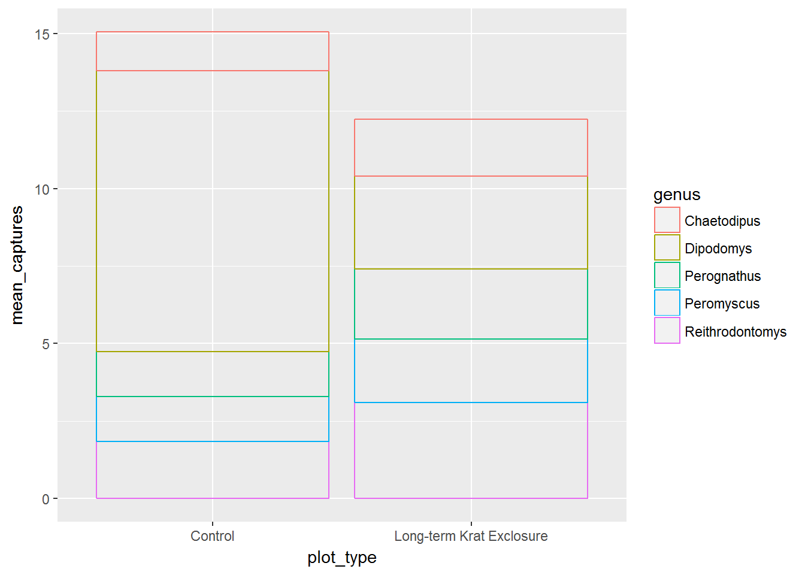
# Use position = "identitiy" to create overlapping bars
ggplot(by_month_mean) +
geom_bar(mapping = aes(x = plot_type, y = mean_captures,
colour = genus),
fill = NA, stat = "identity", position ="identity")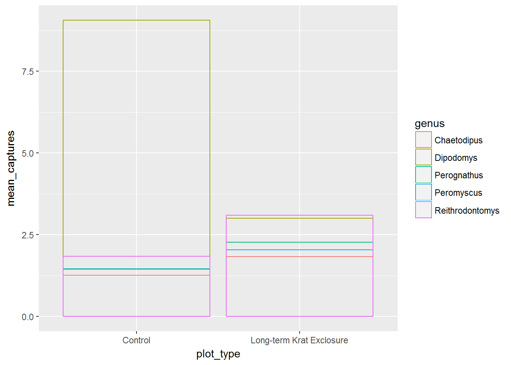
Alternatively we could set postion = dodge and we get the next plot, where the bars for each genus are side by side, again allowing us to see both the proportions and the mean values.
# Use position = "dodge" to create side by side bars
ggplot(by_month_mean) +
geom_bar(mapping = aes(x = plot_type, y = mean_captures,
colour = genus),
fill = NA, stat = "identity", position ="dodge")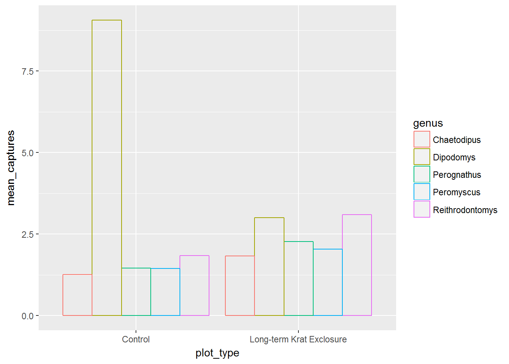
For more positional adjustments, check out the help files ?postion_jitter, ?position_dodge, ?position_fill, ?position_identity, and ?position_stack.
Coordinate adjustments
Previously, we plotted by_month_genus and the genus labels we overlapping. We could change the label size, but to illustrate another function, let’s flip the plot round using coord_flip() to improve things:
# Flip the coordinates to make the labels readable
ggplot(by_month_genus) +
geom_bar(mapping = aes(x = genus, y = captures, fill = rodent_type),
stat = "identity") +
facet_grid(~ plot_type) +
coord_flip()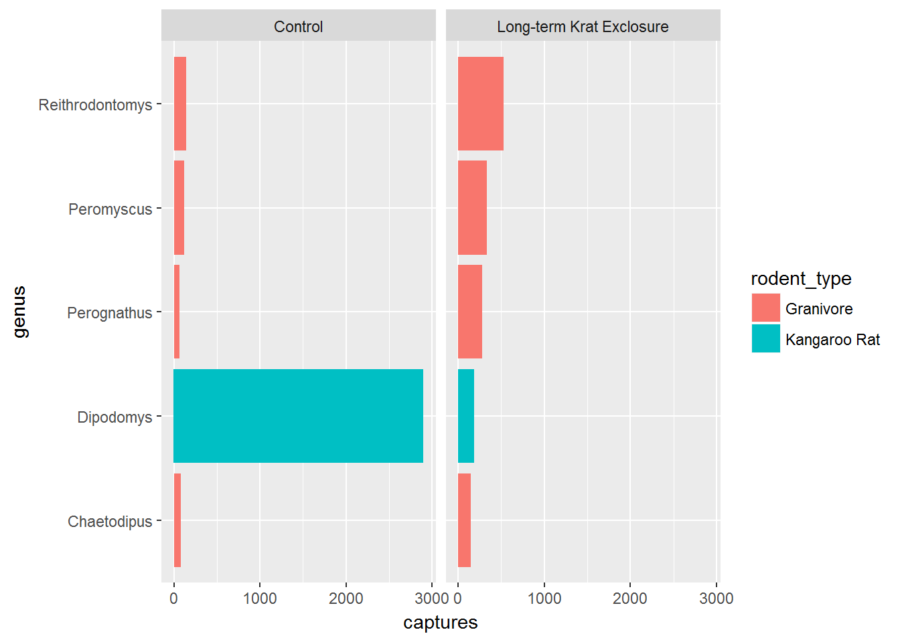
Factors
Finally for this plot, it would be nice to put the bars in order of size. We can do this by converting the genus to a factor.
Recall that factors are how R represents categorical variables, variables with a limited number of values, such as genus.
Also recall factors look like strings, but behave like integers. That is to say they are strings of characters with associated values called levels that can be used to order catergories.
This is why factors are useful, especially when we want to place things in non-alphabetical order. We can take advantage of factor levels to order things as we wish.
Check out the forcats tidyverse package to explore the power of factors, but here to give you a taste of what is possible we’re going to use the forcats package fct_reorder() function to convert genus into a factor and in doing so set the level according to to the number of captures. In this way we can order the bars in our plot according to the number of captures and see the pattern more clearly.
In fct_reorder(), the first argument is the variable we wish to make into a factor genus, and the second argument is variable we wish to use to create the order. Here we want to order according to the number of captures, so captures is the second argument.
Note we still keep x and y mappings, but now x is now a function of both the genus and the capture columns.
This gives us a nice ordered bar chart by genus and number of captures during the experimental period.
We can clearly see that kangaroo rat exclosure works, and that this corresponds with an increase in granivore captures these plots.
# Load the forcats tidyverse package
library(forcats)
# Order the rodents according to number of captures
ggplot(by_month_genus) +
geom_bar(mapping = aes(x = fct_reorder(genus, captures), y = captures,
fill = rodent_type), stat = "identity") +
facet_grid(~ plot_type) +
coord_flip()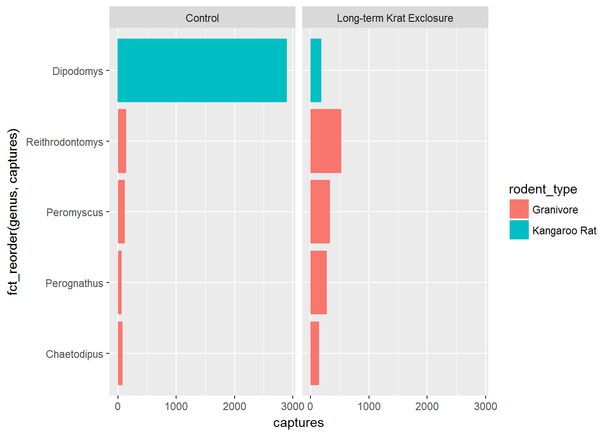
Challenge
To illustrate using the size aesthetic and factors, recreate the
by_month_meanplot using geom_point() with the additional argument ofsize = rodent_type.Use
fct_reorder()to change the x mapping to a factor that is a function ofgenusandmean_capturessuch that the plot is ordered bymean_captures.Don’t forget to change
filltocolourwhen changing fromgeom_bar()togeom_point().
Themes and customisations
When we’re exploring our data we generally don’t mind if the labels and colours etc… are a bit messy. But when we want to publish or communicate our findings to others we want everything to be just so.
This is where the code can become quite complicated and it’s hard to provide a general case. However, the underlying template remains the same:
ggplot(data = <DATA>) +
<GEOM_FUNCTION>(
mapping = aes(<MAPPINGS>),
stat = <STAT>,
position = <POSITION>
) +
<COORDINATE_FUNCTION> +
<FACET_FUNCTION>It’s unlikely that you’ll need to statistical transformations, positional adjustments, coordinate adjustments, and facets all in the same plot, but this provides an idea of what is possible. Remember the aim is clarity, not to make something complicated just because you can.
This template we can use to add all the additional functions and arguments that will change the plot to make it exactly how we want. It takes time, but remember code is reusable. Solve it once and you’ve solved it forever.
For all the possible customisations check out the ggplot2 documentation, and this chapter of R for data science: Graphics for communication
But here’s a few common changes.
Changing colours, labels, themes and adding titles
Recall our box-plot with points overlaid. Following the facet function, we’re going add a succession of functions to change the colours scale_colour_brewer(), change the axis labels, add a title using labs() and change the theme.
Themes deal with non-data elements e.g. the grid, the axes etc. There are a range of built-in themes and packages of themes such as ggthemes. Here we’ll use the built-in theme, theme_bw() that gives a simple layout.
ggplot(data= by_quarter,
mapping = aes(x = rodent_type, y = captures,
colour = rodent_type)) +
geom_boxplot() +
geom_point(position = "jitter") +
facet_wrap(~ plot_type) +
scale_colour_brewer(palette = "Set1") +
labs(title = "Quarterly average captures of rodents between 1977 and 1990",
x = "Rodent type",
y = "Number of captures",
colour = "Rodent type") +
theme_bw()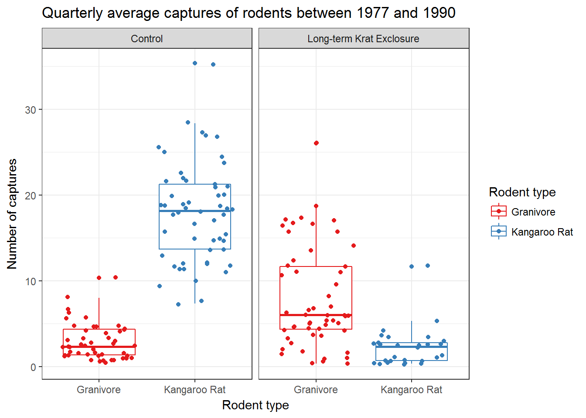
Check out ?scale_colour_brewer and ?scale_fill_brewer for more information on colour schemes for discrete data. And ?scale_color_continuous for creating colour gradients for continuous data.
Recreating the paper figure
With a fair amount of extra code we can mostly re-create the figure from the paper (top two panels only). Interestingly, the shape of the data is not identitical in both plots, suggesting that there are differences in the datasets used to generate these plots. This doesn’t mean our plot is incorrect or more correct, but emphasises two issues:
Raw data is simply the form you receive it in. Raw does not mean that the data has not been transformed previously. Hence it is likely that there are differences between the raw dataset we have, and the dataset used for the paper.
Why scripts are so useful if you want to reproduce an analysis. There is no script available for the paper figure, so we cannot check how it was generated. But our figure is in principal reproducible by anyone capable of running our script.
# Create rodent levels by getting the unique values for rodent type
# and putting them in reverse order for plotting
rodent_levels <- rev(unique(by_quarter$rodent_type))
# Convert rodent_type to factors such that Kangeroo rat is first and Granivore
# is second
by_quarter$rodent_type <- factor(by_quarter$rodent_type,
levels = rodent_levels)
# Now recreate the published figure in black and white
ggplot(data = by_quarter,aes(x=quarter, y=captures, linetype = plot_type,
shape = plot_type)) +
geom_line() +
geom_point() +
facet_wrap(~ rodent_type, nrow = 2) +
scale_x_continuous(breaks = seq(1978,1990,2)) +
labs(x ="YEAR",
y ="CAPTURES / PERIOD",
linetype = "",
shape = "") +
theme_linedraw() +
theme(axis.text = element_text(size = 12, face = "bold"),
axis.title = element_text(size = 12, face = "bold"),
strip.text = element_text(size=12),
panel.grid = element_blank(),
aspect.ratio = 0.6,
legend.position = "top")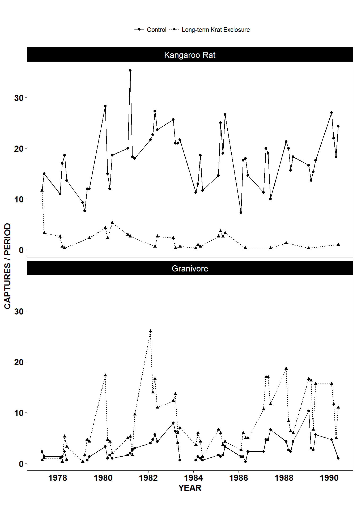
Figure 1 from Heske et. al., 1994
If you are preparing figures for a manuscript or publication, it’s worth checking out the cowplot package that works with ggplot2. This enables easy combinations of different plots and things like panel labels.
Summary
Below is our final template for creating plots with ggplot2.
To reiterate, often the default functions with no extra arguments are sufficient to create the plot we need. But there is a great deal we can change if we need to.
ggplot(data = <DATA>) +
<GEOM_FUNCTION>(
mapping = aes(<MAPPINGS>),
stat = <STAT>,
position = <POSITION>
) +
<COORDINATE_FUNCTION> +
<FACET_FUNCTION> +
<LABEL FUNCTION> +
<THEME FUNCTION>Moreover, we have written code for our plot. It’s now both reusable and reproducible. This is good for spotting errors, or if we are making the same plots on a regular basis we could even start thinking about how to automate this process. Thirdly, when making plots for publication we can easily amend the code to change the appearance of a plot with minimal effort.
In the final part of this lesson we’ll cover exporting figures, and how to turn everything we’ve done into a report. minimal effort if our collaborators or an editor
Data Carpentry, 2017.
License. Questions? Feedback?
Please file
an issue on GitHub.
On Twitter: @datacarpentry